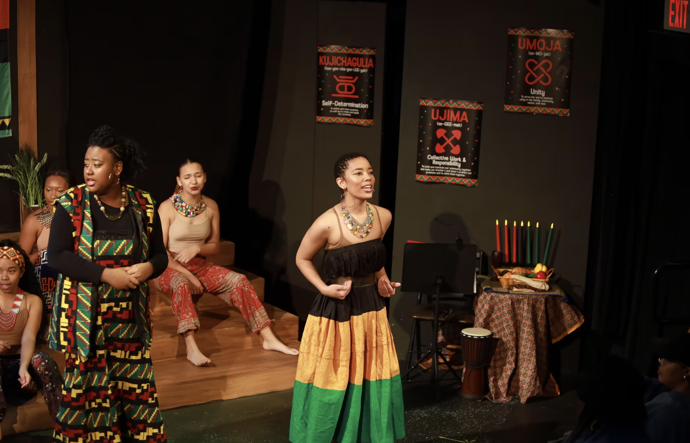
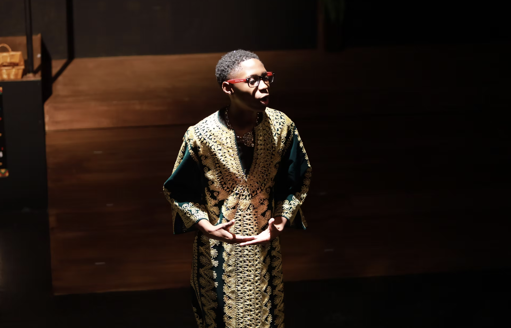

Kids Acting With Purpose
Where Creativity Meets Purpose — programs, productions, camps, and performance opportunities for Fort Worth youth.
Where Creativity Meets Purpose
Maroon 9 programs use theatre-based learning and creative experiences to help young people build artistic skills while strengthening confidence, communication, leadership, and their ability to navigate real-life challenges. From a young person's first introduction to theatre to advanced training, performance, mentorship, and paid opportunities, our programs are designed to grow with them.
Through year-round community programming, Kids Acting With Purpose (KAWP), and Conflict Resolution Through Theatre™, we create accessible opportunities for youth to discover their voice, develop their talents, explore creative careers, and build skills for life beyond the stage.
Kids Acting With Purpose (KAWP)
Kids Acting With Purpose (KAWP) is Maroon 9's signature youth development pathway, designed to help young people grow as artists, leaders, and individuals through theatre training, performance, mentorship, and creative workforce experiences. Follow us on social media @maroon9communityenrichment to stay up to date on programs and opportunities. Online registration can always be found at linktr.ee/maroon9.
Offered during the fall, spring, and summer, the KAWP Actor Training Program gives youth opportunities to develop acting and performance skills through structured theatre-based training. Participants build confidence, strengthen their craft, and prepare to take the stage in Maroon 9 productions and other performance opportunities.
The KAWP Traveling Troupe is our primary creative workforce pathway for youth ready to take the next step. Through a cohort-style experience, a small group of participants are selected for paid performance opportunities, mentorship, monthly creative workforce experience meet-ups, and exposure to careers within the arts and entertainment industry. Youth develop both artistic and professional skills while gaining real-world experience as working young creatives.



Major Productions
KAWP youth have the opportunity to participate in two major performance experiences each year—our summer and holiday productions—along with additional community performances and special events.



Past Productions & Performance Seasons
Through each stage of KAWP, youth can progress from exploration and training to performance, mentorship, leadership, and paid creative opportunities—building skills and experiences that prepare them for life beyond the stage.